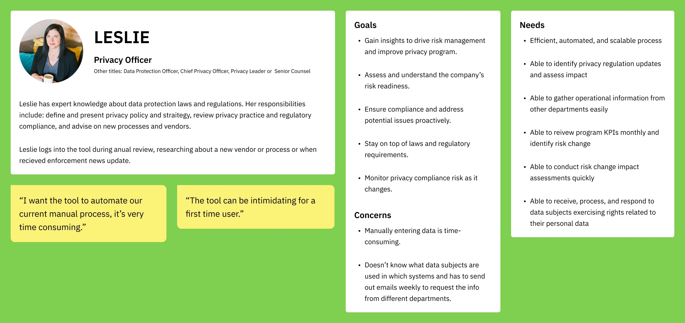

Guiding TrustArc feature development with user research
by Chuan Tan · 2 min read
Overview
TrustArc is a comprehensive privacy compliance platform that offers privacy law content, policy templates, and enforcement tracking tools.
The Challenge
As more organizations hire privacy professionals to develop robust privacy programs, TrustArc needed to gain a deeper understanding of these users to better support their business objectives.
The Outcome
Through the development of detailed personas and actionable research insights, the team was able to strategically plan the product roadmap to align with user needs.
Privacy officer persona
Planning & Recruitment
After securing stakeholder buy-in, I crafted a comprehensive research plan using the UX Research Canvas. This plan outlined our goals, research questions, assumptions, existing knowledge, methodologies, timelines, and deliverables. We initiated the recruitment process by reaching out to previous survey participants and sales prospects who met our criteria.
Our primary research questions were:
- What prompts users to log into TrustArc?
- What specific content are they seeking?
Interviews
Utilizing a structured interview script, I conducted sessions with both end-users and internal stakeholders who regularly interact with our user base. The interviews comprised two segments:
- User Context: Exploring the user’s role, responsibilities, objectives, and pain points.
- Task Observation: Encouraging participants to perform typical tasks while thinking aloud to capture real-time feedback and behaviors.
Personas & Research Insights
Employing Dovetail as our research repository, I analyzed the interview recordings to develop three distinct user personas and extracted 14 key insights.
- Primary Persona: Privacy Officer
- Top Motivation: Staying updated with regulatory changes
- Common Pain Point: Difficulty in discovering relevant content
- Key Insight: Users desire customized content tailored to their specific needs
An example of the research insights
Conclusion
The insights garnered from this research enabled TrustArc to gain a nuanced understanding of their user base. These findings informed strategic decisions in the product roadmap, ensuring that developments are closely aligned with user requirements and expectations.
View more projects